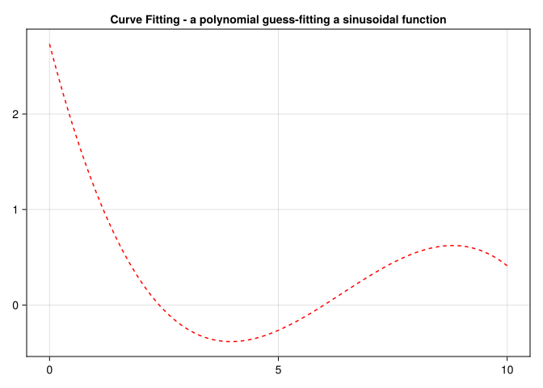

using Zygote
# Define a differentiable function
f(x) = 3x^2 + 2x + 1
# Define an input value
x = 2.0
println("Value of f(x) at x=", f(x))
println("Gradient of f(x) at x=", gradient(f, x))Value of f(x) at x=17.0
Gradient of f(x) at x=(14.0,)Optimization as root finding or minimization/maximazation of defined objectives. Differentiable programming and the benefits to optimization problems. Other non gradient based optimization approaches. Model fitting as an optimization problem.
Differentiable programming is an approach to programming where functions are defined using differentiable operations, allowing automatic differentiation to be applied to them. Automatic differentiation is a technique used to efficiently compute derivatives of functions, and it is crucial in many machine learning algorithms, optimization techniques, and scientific computing applications.
Elements in differentiable programming
Differentiable functions: Functions are defined using operations that are differentiable. These operations include basic arithmetic operations (addition, subtraction, multiplication, division), as well as more complex operations like exponentials, logarithms, trigonometric functions, etc.
Automatic differentiation (AD): Automatic differentiation is used to compute derivatives of functions with respect to their inputs or parameters. AD exploits the fact that every computer program, no matter how complex, executes a sequence of elementary arithmetic operations (addition, subtraction, multiplication, division), and elementary functions (exponentials, logarithms, trigonometric functions). By applying the chain rule repeatedly to these operations, derivatives of arbitrary order can be computed automatically, accurately to working precision, and using at most a small constant factor more arithmetic operations than the original program. Refer to Chapter 14 on automatic differentiation.
Optimization and machine learning: Differentiable programming is particularly useful in optimization problems, where gradients or higher-order derivatives are required to find the minimum or maximum of a function. It’s also widely used in machine learning, where optimization algorithms like gradient descent are used to train models by adjusting their parameters to minimize a loss function.
Gradient calculation: The gradient plays a crucial role in optimization problems primarily because it provides the direction of the steepest ascent of a function. Optimization algorithms often iteratively update parameters in the direction opposite to the gradient (for minimization problems), which tends to converge towards a local minimum (or maximum for maximization problems). Besides, computing the gradient is often computationally feasible and relatively inexpensive compared to other methods for determining function behavior, such as higher-order derivatives or function evaluations at different points. Beyond just the direction, the magnitude (or norm) of the gradient also indicates how steep the function change is in that direction. This information is used to adjust step sizes in optimization algorithms, balancing between convergence speed and stability.
Local and global optimization: A local optimal value refers to a solution where the objective function (or cost function) has the best possible value in a neighborhood surrounding that solution. A global optimal value, on the other hand, is the best possible value of the objective function across the entire feasible domain. For smooth and convex functions, the gradient points towards the global minimum (or maximum), making it extremely efficient for finding the optimal solution. Even for non-convex functions, the gradient provides valuable information about the direction to move towards improving the objective function value locally.
Here shows the value and the derivative of a simple function at a certain point:
using Zygote
# Define a differentiable function
f(x) = 3x^2 + 2x + 1
# Define an input value
x = 2.0
println("Value of f(x) at x=", f(x))
println("Gradient of f(x) at x=", gradient(f, x))Value of f(x) at x=17.0
Gradient of f(x) at x=(14.0,)This category includes algorithms that do not rely on gradients or derivative information. They often explore the objective function using heuristics or other types of probes to guide the search.
Linear optimization, also known as linear programming (LP), is a mathematical method for finding the best outcome in a mathematical model with linear relationships. It involves optimizing a linear objective function subject to a set of linear equality and inequality constraints. Linear programming has a wide range of applications across various fields, including operations research, economics, engineering, and logistics.
We will use linear optimization to solve the following problem, with \(n\) the number of elements in \(b\):
\[\begin{align*} \max_{x} \quad c \cdot x \text{Subject to} x \geq 0 \\ A_i \cdot x \leq b_i \quad \forall i \in n \end{align*}\]
using JuMP, GLPK, LinearAlgebra
# Define the objective coefficients
c = [1.0, 2.0, 3.0]
# Define the constraint matrix (A) and right-hand side (b)
A = [1.0 1.0 0.0;
0.0 1.0 1.0]
b = [10.0, 20.0]
# Create a JuMP model
linear_model = Model(GLPK.Optimizer)
# Define decision variables
@variable(linear_model, x[1:3] >= 0)
# Define objective function
@objective(linear_model, Max, dot(c, x))
# Add constraints
@constraint(linear_model, constr[i=1:2], dot(A[i, :], x) <= b[i])
# Solve the optimization problem
optimize!(linear_model)
# Print results
println("Objective value: ", objective_value(linear_model))
println("Optimal solution:")
for i in 1:3
println("\tx[$i] = ", value(x[i]))
endObjective value: 70.0
Optimal solution:
x[1] = 10.0
x[2] = 0.0
x[3] = 20.0Integer Programming (IP) is a type of optimization problem where some or all of the variables are restricted to be integers. Although the problem definition seems similar to an LP, the complexity of solving an IP hugely increases as the solution space is not continuous but discrete.
Let us use IP to solve this problem. A factory produces two types of products x₁ and x₂ with the following details:
\[\begin{align*} \max_{x} 40 \cdot x_1 + 50 \cdot x_2 \text{Subject to} x_1 and x_2 are integers \\ 4 \cdot x_1 + 3 \cdot x_2 \le 200 (labor) x_1 + 2 \cdot x_2 \le 40 (material) \end{align*}\]
# Import necessary packages
using JuMP, GLPK
# Create a model with the GLPK solver
model = Model(GLPK.Optimizer)
# Define decision variables (x₁ and x₂ are integers)
@variable(model, x₁ >= 0, Int)
@variable(model, x₂ >= 0, Int)
# Define the objective function (maximize profit)
@objective(model, Max, 40 * x₁ + 50 * x₂)
# Add constraints
@constraint(model, 4x₁ + 3x₂ <= 200) # Labor constraint
@constraint(model, x₁ + 4x₂ <= 40) # Material constraint
# Solve the model
optimize!(model)
# Check the solution status
if termination_status(model) == MOI.OPTIMAL
println("Optimal solution found!")
println("x₁ (Product x₁ units): ", value(x₁))
println("x₂ (Product x₂ units): ", value(x₂))
println("Maximum Profit: ", objective_value(model))
else
println("No optimal solution found.")
endOptimal solution found!
x₁ (Product x₁ units): 40.0
x₂ (Product x₂ units): 0.0
Maximum Profit: 1600.0The Nelder-Mead simplex method is a popular optimization algorithm used for minimizing (or maximizing) nonlinear functions that are not necessarily differentiable. It’s particularly useful when gradient-based methods cannot be applied. It is often used in low-dimensional problems due to its simplicity and robustness.
using Optim, Plots
# Define the Rosenbrock function
function rosenbrock(v)
x, y = v[1], v[2]
return (1 - x)^2 + 100 * (y - x^2)^2
end
# Initial guess for (x, y)
initial_guess = [-1.5, 2.0]
# Perform optimization using the Nelder-Mead method
result = optimize(rosenbrock, initial_guess, NelderMead())
# Extract results
optimal_point = Optim.minimizer(result)
minimum_value = Optim.minimum(result)
println("Optimal Point: ", optimal_point)
println("Minimum Value: ", minimum_value)Optimal Point: [0.9999913430783984, 0.9999847519696222]
Minimum Value: 5.016695917763382e-10Simulated Annealing (SA) is a probabilistic optimization technique inspired by the annealing process in metallurgy. It is used to find near-optimal solutions to optimization problems, particularly in cases where traditional gradient-based methods may get stuck in local minima/maxima. SA accepts worse solutions with a certain probability, allowing it to explore the search space more broadly initially and then gradually narrow down towards better solutions as it progresses.
using Random
Random.seed!(1234)
# Parameters
max_iterations = 1000 # Number of iterations
initial_temperature = 100.0 # Starting temperature
cooling_rate = 0.99 # Cooling rate (temperature multiplier)
bounds = (-5.12, 5.12) # Bounds for the search space
dimension = 5 # Number of dimensions in the search space
# Objective function: Rastrigin function
function rastrigin(x)
A = 10
n = length(x)
return A * n + sum(xi^2 - A * cos(2 * π * xi) for xi in x)
end
# Random initialization within bounds
function initialize_solution()
return rand(bounds[1]:0.01:bounds[2], dimension)
end
# Random perturbation within bounds
function perturb_solution(solution)
perturbed = copy(solution)
index = rand(1:dimension)
perturb_amount = rand(-0.1:0.01:0.1) # Small random change
perturbed[index] += perturb_amount
# Ensure perturbed solution is within bounds
perturbed[index] = clamp(perturbed[index], bounds[1], bounds[2])
return perturbed
end
# Simulated Annealing main function
function simulated_annealing()
current_solution = initialize_solution()
current_value = rastrigin(current_solution)
best_solution = copy(current_solution)
best_value = current_value
temperature = initial_temperature
for iteration in 1:max_iterations
# Generate new candidate solution by perturbation
candidate_solution = perturb_solution(current_solution)
candidate_value = rastrigin(candidate_solution)
# Acceptance probability (Metropolis criterion)
ΔE = candidate_value - current_value
if ΔE < 0 || rand() < exp(-ΔE / temperature)
current_solution = candidate_solution
current_value = candidate_value
end
# Update best solution found so far
if current_value < best_value
best_solution = copy(current_solution)
best_value = current_value
end
# Decrease temperature
temperature *= cooling_rate
if iteration % 100 == 0
println("Iteration $iteration: Best Value = $best_value, Temperature = $temperature")
end
end
return best_solution, best_value
end
# Run the simulated annealing algorithm
best_solution, best_value = simulated_annealing()
println("Best Solution: ", best_solution)
println("Best Value (Minimum): ", best_value)Iteration 100: Best Value = 79.6456061966745, Temperature = 36.60323412732294
Iteration 200: Best Value = 68.74807121999402, Temperature = 13.397967485796167
Iteration 300: Best Value = 35.612137805380314, Temperature = 4.9040894071285726
Iteration 400: Best Value = 22.630909076712427, Temperature = 1.7950553275045138
Iteration 500: Best Value = 22.116366182140844, Temperature = 0.6570483042414603
Iteration 600: Best Value = 22.11468680700349, Temperature = 0.24050092913110663
Iteration 700: Best Value = 21.995266535865557, Temperature = 0.08803111816824594
Iteration 800: Best Value = 21.93833868942773, Temperature = 0.03222223628802339
Iteration 900: Best Value = 21.918338689427735, Temperature = 0.011794380589564411
Iteration 1000: Best Value = 21.918338689427735, Temperature = 0.004317124741065788
Best Solution: [-0.9999999999999993, -1.3357370765021415e-16, -1.9799999999999993, 3.979999999999999, -0.9899999999999995]
Best Value (Minimum): 21.918338689427735Particle swarm optimization is a metaheuristic optimization algorithm inspired by the social behavior of birds flocking or fish schooling. It is used to solve optimization problems by iteratively improving a candidate solution based on the velocity and position of particles (potential solutions) in the search space. The PSO algorithm differs from other methods in a key way, that instead of updating a single candidate solution at each iteration, we update a population (set) of candidate solutions, called a swarm. Each candidate solution is the swarm is called a particle. We think of a swarm as an apparently disorganized population of moving individuals that tend to cluster together while each individual seems to be moving in a random direction. The POS algorithm aims to mimic the social behavior of animals and insects.
using Random, Plots
# Define the Rosenbrock function
function rosenbrock(x)
return (1 - x[1])^2 + 100 * (x[2] - x[1]^2)^2
end
# PSO Implementation
function particle_swarm_optimization(objective, n_particles, n_iterations, bounds, dim)
# Initialize particles
positions = [rand(bounds[1]:0.1:bounds[2], dim) for _ in 1:n_particles]
velocities = [rand(-1.0:0.1:1.0, dim) for _ in 1:n_particles]
personal_best_positions = deepcopy(positions)
personal_best_scores = [objective(p) for p in positions]
global_best_position = personal_best_positions[argmin(personal_best_scores)]
global_best_score = minimum(personal_best_scores)
# PSO parameters
ω = 0.5 # Inertia weight
c1, c2 = 2.0, 2.0 # Cognitive and social learning factors
# Optimization loop
for iter in 1:n_iterations
for i in 1:n_particles
# Update velocity
r1, r2 = rand(), rand()
velocities[i] .= ω .* velocities[i] +
c1 * r1 .* (personal_best_positions[i] - positions[i]) +
c2 * r2 .* (global_best_position - positions[i])
# Update position
positions[i] .= positions[i] .+ velocities[i]
# Clamp positions within bounds
positions[i] .= clamp.(positions[i], bounds[1], bounds[2])
# Evaluate fitness
score = objective(positions[i])
if score < personal_best_scores[i]
personal_best_positions[i] = deepcopy(positions[i])
personal_best_scores[i] = score
end
if score < global_best_score
global_best_position = deepcopy(positions[i])
global_best_score = score
end
end
if iter % 100 == 0
println("Iteration $iter: Best Score = $global_best_score")
end
end
return global_best_position, global_best_score
end
# Parameters
n_particles = 30
n_iterations = 1000
bounds = (-2.0, 2.0)
dim = 2
# Run PSO
best_position, best_score = particle_swarm_optimization(rosenbrock, n_particles, n_iterations, bounds, dim)
println("Best Position: $best_position")
println("Best Score: $best_score")
# Visualization
x = -2.0:0.05:2.0
y = -1.0:0.05:3.0
Z = [(1 - xi)^2 + 100 * (yi - xi^2)^2 for yi in y, xi in x]
heatmap(x, y, Z, color=:viridis, title="PSO Optimization of Rosenbrock", xlabel="x", ylabel="y")
scatter!([best_position[1]], [best_position[2]], color=:red, label="Optimal Solution")Iteration 100: Best Score = 5.829480589621494e-19
Iteration 200: Best Score = 0.0
Iteration 300: Best Score = 0.0
Iteration 400: Best Score = 0.0
Iteration 500: Best Score = 0.0
Iteration 600: Best Score = 0.0
Iteration 700: Best Score = 0.0
Iteration 800: Best Score = 0.0
Iteration 900: Best Score = 0.0
Iteration 1000: Best Score = 0.0
Best Position: [1.0, 1.0]
Best Score: 0.0An evolutionary algorithm (EA) is a family of optimization algorithms inspired by the principles of biological evolution. They are particularly useful for solving complex optimization problems where traditional gradient-based methods may struggle due to non-linearity, multimodality, or high dimensionality of the search space.
The following shows an example to maximize population fitness in terms of an objective function, with common crossover and mutation processes throughout all generations.
using Random
Random.seed!(1234)
# Parameters
population_size = 50 # Number of individuals in the population
chromosome_length = 5 # Number of genes in each individual (dimensionality)
generations = 1000 # Number of generations
mutation_rate = 0.1 # Probability of mutation
crossover_rate = 0.7 # Probability of crossover
bounds = (-5.12, 5.12) # Boundaries for each gene
# Target function: Rastrigin function (a common benchmark for optimization)
function rastrigin(x)
A = 10
n = length(x)
return A * n + sum(xi^2 - A * cos(2 * π * xi) for xi in x)
end
# Initialize population randomly within bounds
function initialize_population()
return [rand(bounds[1]:0.01:bounds[2], chromosome_length) for _ in 1:population_size]
end
# Fitness function (negative because we are minimizing)
function fitness(individual)
return -rastrigin(individual)
end
# Selection: Tournament selection
function tournament_selection(population, fitnesses)
candidates = rand(1:population_size, 2)
return ifelse(fitnesses[candidates[1]] > fitnesses[candidates[2]],
population[candidates[1]], population[candidates[2]])
end
# Crossover: Single-point crossover
function crossover(parent1, parent2)
if rand() < crossover_rate
point = rand(1:chromosome_length)
child1 = vcat(parent1[1:point], parent2[point+1:end])
child2 = vcat(parent2[1:point], parent1[point+1:end])
return child1, child2
else
return parent1, parent2
end
end
# Mutation: Randomly change genes with some probability
function mutate(individual)
for i in 1:chromosome_length
if rand() < mutation_rate
individual[i] = rand(bounds[1]:0.01:bounds[2])
end
end
return individual
end
# Main Genetic Algorithm loop
function genetic_algorithm()
population = initialize_population()
best_individual = nothing
best_fitness = -Inf
for gen in 1:generations
# Evaluate fitness
fitnesses = [fitness(ind) for ind in population]
# Find best individual in current population
current_best = argmax(fitnesses)
if fitnesses[current_best] > best_fitness
best_fitness = fitnesses[current_best]
best_individual = population[current_best]
end
# Generate new population
new_population = []
while length(new_population) < population_size
# Selection
parent1 = tournament_selection(population, fitnesses)
parent2 = tournament_selection(population, fitnesses)
# Crossover
child1, child2 = crossover(parent1, parent2)
# Mutation
child1 = mutate(child1)
child2 = mutate(child2)
# Add children to new population
push!(new_population, child1, child2)
end
population = new_population[1:population_size]
if gen % 100 == 0
println("Generation $gen: Best Fitness = ", best_fitness)
end
end
return best_individual, -best_fitness
end
# Run the genetic algorithm
best_solution, best_value = genetic_algorithm()
println("Best Solution: ", best_solution)
println("Best Value (Minimum): ", best_value)Generation 100: Best Fitness = -2.9892957379930465
Generation 200: Best Fitness = -2.9298754668551084
Generation 300: Best Fitness = -2.925944644659097
Generation 400: Best Fitness = -2.925944644659097
Generation 500: Best Fitness = -2.4473414288189446
Generation 600: Best Fitness = -2.2971131952856183
Generation 700: Best Fitness = -2.2971131952856183
Generation 800: Best Fitness = -2.2971131952856183
Generation 900: Best Fitness = -2.2971131952856183
Generation 1000: Best Fitness = -2.2971131952856183
Best Solution: [0.0, -0.02, -1.0, -1.01, 0.03]
Best Value (Minimum): 2.2971131952856183Bayesian Optimization (BO) is a powerful technique for global optimization of expensive-to-evaluate black-box functions. It leverages probabilistic models to predict the objective function’s behavior across the search space and uses these models to make informed decisions about where to evaluate the function next. This approach efficiently balances exploration (searching for promising regions) and exploitation (exploiting regions likely to yield optimal values), making it particularly suitable for optimization problems where function evaluations are costly, such as tuning hyperparameters of machine learning models or optimizing parameters of complex simulations.
using Random
# Define your objective function to be optimized
function objective(x::Float64)
return -(x^2 + 0.1 * sin(5 * x)) # Example objective function (negative because we seek maximum)
end
# Bayesian optimization function
function bayesian_optimization(objective, bounds::Tuple{Float64,Float64}, num_iterations::Int)
Random.seed!(1234) # Setting a seed for reproducibility
X = Float64[] # List to store evaluated points
Y = Float64[] # List to store objective values
# Initial random point (you can choose other initial points as well)
x_init = rand() * (bounds[2] - bounds[1]) + bounds[1]
push!(X, x_init)
push!(Y, objective(x_init))
# Main loop
for i in 1:num_iterations
# Fit a model to the observed data (Gaussian Process in this case)
# For simplicity, let's just use the current best observed value
x_next = rand() * (bounds[2] - bounds[1]) + bounds[1] # Random sampling
# Evaluate the objective function at the chosen point
y_next = objective(x_next)
# Update the data with the new observation
push!(X, x_next)
push!(Y, y_next)
# Here, we will just print the current best observed value
println("Iteration $i: Best value = $(maximum(Y))")
end
# Return the best observed value and corresponding parameter
best_idx = argmax(Y)
return X[best_idx], Y[best_idx]
end
best_x, best_value = bayesian_optimization(objective, (-5.0, 5.0), 10)
println("Best x found: $best_x, Best value: $best_value")Iteration 1: Best value = -0.3041807254074535
Iteration 2: Best value = -0.3041807254074535
Iteration 3: Best value = -0.3041807254074535
Iteration 4: Best value = -0.3041807254074535
Iteration 5: Best value = -0.3041807254074535
Iteration 6: Best value = -0.3041807254074535
Iteration 7: Best value = -0.3041807254074535
Iteration 8: Best value = 0.02504980758369785
Iteration 9: Best value = 0.02504980758369785
Iteration 10: Best value = 0.02504980758369785
Best x found: -0.057501331095793695, Best value: 0.02504980758369785The Broyden-Fletcher-Goldfarb-Shanno (BFGS) method is a popular iterative optimization algorithm used for unconstrained optimization problems. It belongs to the family of quasi-Newton methods, which are designed to find the local minimum of a differentiable objective function without needing its Hessian matrix directly. Instead, BFGS iteratively constructs an approximation to the inverse Hessian matrix using gradients of the objective function.
The following example uses the Optim package available in Julia to do the BFGS optimization.
using Optim
# Define the objective function to minimize
function objective_function(x)
return sum(x .* x)
end
# Initial guess for the minimization
initial_x = [1.0]
# Perform optimization using BFGS method
result = optimize(objective_function, initial_x, BFGS())
# Extract the optimized solution
solution = result.minimizer
minimum_value = result.minimum
# Print the result
println("Optimized solution: x = ", solution)
println("Minimum value found: ", minimum_value)Optimized solution: x = [-6.359357485052897e-13]
Minimum value found: 4.0441427622698303e-25Root finding, also known as root approximation or root isolation, is the process of finding the values of the independent variable (usually denoted as \(x\)) for which a given function equals zero. In mathematical terms, if we have a function \(f(x)\), root finding involves finding values of \(x\) such that \(f(x)=0\).
There are various algorithms for root finding, each with its own advantages and disadvantages depending on the characteristics of the function and the requirements of the problem. One notable approach is Newton’s method, an iterative method that uses the derivative of the function to approximate the root with increasing accuracy in each iteration.
We will again use a simple function to illustrate the process:
using Zygote
# Define a differentiable function
f(x) = 3x^2 + 2x + 1
# Define an initial value
x = 1.0
# tolerance of difference in value
tol = 1e-6
# maximum number of iteration of the algorithm
max_iter = 100
iter = 0
while abs(f(x)) > tol && iter < max_iter
x -= f(x) / gradient(f, x)[1]
iter += 1
end
if iter == max_iter
println("Warning: Maximum number of iterations reached.")
else
println("Root found after", iter, " iterations.")
end
print("Approximate root: ", x)Warning: Maximum number of iterations reached.
Approximate root: -1.391591884376212A bracketed search algorithm is a technique used in optimization and numerical methods to confine or “bracket” a minimum or maximum of a function within a specified interval. The primary goal is to reduce the search space systematically until a satisfactory solution or range containing the optimal value is found.
function bisection_method(f, a, b; tol=1e-6, max_iter=100)
"""
Bisection method to find a root of the function f(x) within the interval [a, b].
Parameters:
- f: Function to find the root of.
- a, b: Initial interval [a, b] where the root is expected to be.
- tol: Tolerance for the root (default is 1e-6).
- max_iter: Maximum number of iterations allowed (default is 100).
Returns:
- root: Approximate root found within the tolerance.
- iterations: Number of iterations taken to converge.
"""
fa = f(a)
fb = f(b)
if fa * fb > 0
error("The function values at the endpoints must have opposite signs.")
end
iterations = 0
while (b - a) / 2 > tol && iterations < max_iter
c = (a + b) / 2
fc = f(c)
if fc == 0
return c, iterations
end
if fa * fc < 0
b = c
fb = fc
else
a = c
fa = fc
end
iterations += 1
end
root = (a + b) / 2
return root, iterations
end
# Define the function we want to find the root of
function f(x)
return x^3 - 6x^2 + 11x - 6.1
end
# Initial interval [a, b] and tolerance
a = 0.5
b = 10
tolerance = 1e-6
# Apply the bisection method
root, iterations = bisection_method(f, a, b, tol=tolerance)
# Print results
println("Approximate root: ", root)
println("Iterations taken: ", iterations)
println("Function value at root: ", f(root))Approximate root: 3.046680122613907
Iterations taken: 23
Function value at root: -9.356632642010254e-7In model fitting, the “best fitting curve” refers to the curve or function that best describes the relationship between the independent and dependent variables in the data. The goal of model fitting is to find the parameters of the chosen curve or function that minimize the difference between the observed data points and the values predicted by the model.
The process of finding the best fitting curve typically involves:
Choosing a model: Based on the nature of the data and the underlying relationship between the variables, a suitable model or family of models are selected.
Estimating parameters: Using the chosen model, one estimates the parameters that best describe the relationship between the variables. This is often done using optimization techniques such as least squares regression, maximum likelihood estimation, or Bayesian inference.
Evaluating the fit: Once the parameters are estimated, one evaluates the goodness of fit of the model by comparing the predicted values to the observed data. Common metrics for evaluating fit, or error functions, include the residual sum of squares, the coefficient of determination (R-squared), and visual inspection of the residuals.
Iterating if necessary: If the fit is not satisfactory, one may need to iterate on the model or consider alternative models until you find a satisfactory fit to the data.
using LsqFit, CairoMakie
x_data = 0:0.1:10
y_data = 2 .* sin.(x_data) .+ 0.5 .* randn(length(x_data))
# Define the model function
curve_model(x, p) = p[1] * x .^ 3 + p[2] * x .^ 2 .+ p[3] * x .+ p[4]
# Initial parameter guess
p₀ = [1.0, 1.0, 1.0, 1.0]
# Fit the model to the data
fit_result = curve_fit(curve_model, x_data, y_data, p₀)
# Extract the fitted parameters
params = coef(fit_result)
# Evaluate the model with the fitted parameters
y_fit = curve_model(x_data, params)
# Plot the data and the fitted curve
fig = Figure()
Axis(fig[1, 1], title="Curve Fitting - a polynomial guess-fitting a sinusoidal function")
scatter!(x_data, y_data, label="Data")
lines!(x_data, y_fit, label="Fitted Curve", linestyle=:dash, color=:red)
fig┌ Warning: Found `resolution` in the theme when creating a `Scene`. The `resolution` keyword for `Scene`s and `Figure`s has been deprecated. Use `Figure(; size = ...` or `Scene(; size = ...)` instead, which better reflects that this is a unitless size and not a pixel resolution. The key could also come from `set_theme!` calls or related theming functions.
└ @ Makie ~/.julia/packages/Makie/Y3ABD/src/scenes.jl:238